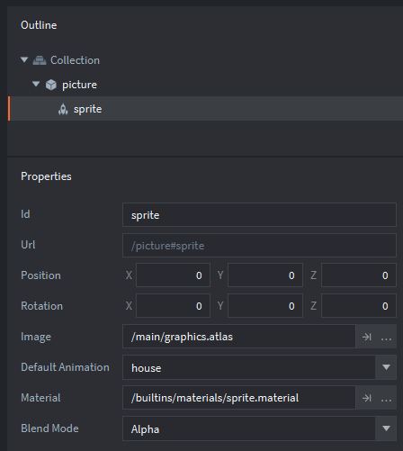
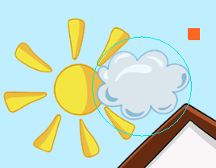
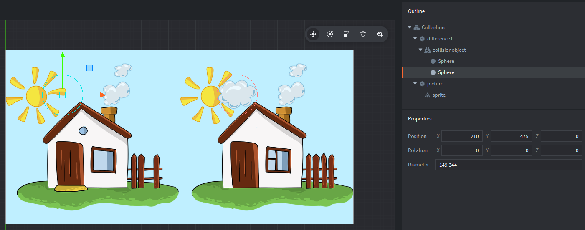

Tutorials for 2D games projects
Spotter | Spot the difference picture and where the differences are located.
- In the assets panel, in the 'main' folder, double click, 'level1.collection'.
(If you don't have this it is because you named yours differently in a previous step.) - In the outline panel, right click, 'Collection' and select, 'Add Game Object'.
- In the properties panel, change the 'Id' property to, 'picture'.
- In the properties panel, change the 'Position' properties to, X: 640, Y: 320.
- In the outline panel, right click, 'picture' and select, 'Add Component, 'Sprite'.
- In the properties panel, set the 'Image' property to be, '/main/graphics.atlas'.
- In the properties panel, set the 'Default Animation' to be, 'house'.
Your outline and properties panel should look like this:

- Press F to zoom out in the editor panel to see the image. You can also use the mouse wheel if you have one to zoom in and out, press and hold the mouse wheel to move the view pane of the canvas.
The location of the differences will be set by collision object spheres. This will easily enable us to detect if a difference has been found later without the need for any additional data. Essentially the data for each difference is stored in the X, Y and diameter properties of each sphere.
- In the outline panel, right click, 'Collection' and select, 'Add Game Object'.
- In the properties panel, change the 'Id' property to, 'difference1'.
- In the outline panel, right click, 'difference1' and select, 'Add Component', 'Collision Object'.
- In the properties panel, change the 'Type' property to 'Kinematic'.
- In the outline panel, right click, 'collisionobject' and select, 'Add Shape', 'Sphere'.
- In the editor panel, use the object controls to move and size the sphere to roughly match the cloud over the sun.

Aim for something like this:

Another way of achieving this is to set the X and Y properties of the sphere to X: 852 and Y: 475. The 'Diameter' property will be about 150.
In this game, the player could click either picture to find the difference. Therefore we need to have another sphere in a similar place on the other picture too. You can use copy and paste to duplicate objects in Defold.
- With the 'Sphere' still highlighted in the outline panel, press CTRL-C and CTRL-V to copy and paste the sphere. It will be copied on top of the other object, but you should see both spheres in the outline panel.
- In the editor panel, using the move object tool, move the second sphere into place. To line them up almost perfectly you could instead change the X and Y 'Position' propertes to, X: 210, Y: 475.

Note how we have given one game object two different collision objects. This is quite unusual, but it shows you what is possible. This object can collide with others in two different places at the same time! It's ideal for this game where we want to give the user maximum flexibility and not restrict them to using just one of the two images to click.
- Save the changes by pressing CTRL-S or 'File', 'Save All'.
- Run the program by pressing F5 or choosing, 'Debug', 'Start / Attach' from the menu bar. You should be able to select level 1 and see the picture. The collision objects don't work yet because there is no script for the player selecting a difference.

The next stage is to allow the user to click somewhere on the picture and spawn a target at that location. Stage 4a >
 Craig'n'Dave | Version 1.3
Craig'n'Dave | Version 1.3